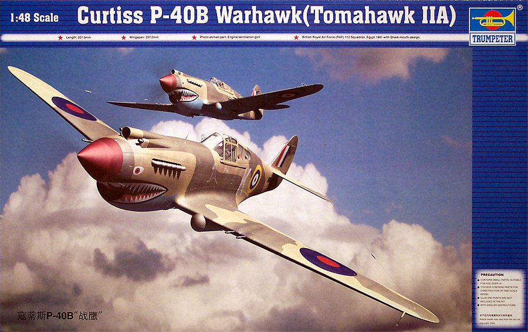
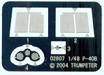
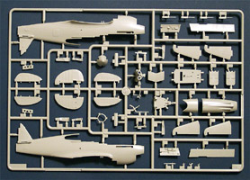
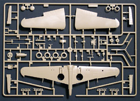
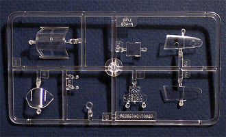
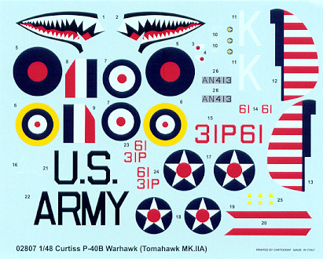

{kind=link}
{kind=link}
{kind=link}


Trumpeter 1/48 Curtiss P-40B Warhawk

Kit #2807
MSRP $29.95
Images and text Copyright © 2004 by Matt Swan
Developmental Background
The P-40 Warhawk/Tomahawk/Kittyhawk family of fighters evolved from the Curtiss P-36 Hawk series with a better engine and all round better performance. The first group of variants that saw any combat service was the P-40B/C Tomahawk and these versions were exported to China in the early days of the Japanese invasion. The Curtiss P-40B was the best fighter the US had at the beginning of WWII. Although it achieved a trial speed of 366 mph, summarily whipping the existing competition at the time, when war broke out it was quickly realized that it was not an equal to Japan’s Zero or to Germany’s Bf-109. Pilots soon developed tactics to take advantage of the Tomahawk’s diving ability while avoiding twisting dogfights with the lighter and more maneuverable Zeros and Messerschmitts.
The XP-40 prototype first flew on October 14th, 1938. Powered by a 1,050 hp Allison V-1710-19 liquid-cooled engine with integral supercharging, it could reach 342 mph at 12,200 feet. P-40 delivery to the USAAC (200 planes) began in June of 1940. Powered by the 1,040 hp V-1710-33, it could achieve a speed of 357 mph, and was armed by two cowl-mounted .50 cal and two wing-mounted .30 cal machine guns. The P-40B had an extra 7.7mm machine gun in each wing and the first “B” flew on March 13, 1941. These aircraft were delivered in full camouflage and retained the same dimensions of the P-40, but weight was increased to 5590 pounds empty, 7326 pounds gross, and 7600 pounds maximum loaded. Because of the additional weight, the P-40B had an inferior performance to the P-40, maximum speed being 352 mph, service ceiling being 32,400 feet, and initial climb rate being 2860 feet per minute. Normal range was 730 miles, but an extended range of 1230 miles could be attained at the minimum cruise settings.
The export equivalent of the P-40B was the Tomahawk IIA. They differed from the American version by having the wing guns replaced by four 0.303-inch Brownings. 110 were produced for the RAF. 23 of these planes were transferred to the USSR, and one (AH938) went to Canada as an instructional airframe. The P-40 was used by Argentina, Australia, Belgium, Brazil, Canada, China, Colombia, Egypt, Finland, France, Great-Britain, Iraq, Italy, New Zealand, Netherlands, Norway, Peru, Portugal, South Africa, Turkey, USA and USSR! The only American fighter aircraft built in larger numbers than the P-40 were the P-47 Thunderbolt and P-51 Mustang. The P-40 saw many variations in engine and armament outfits, each of which received a different production letter. The “E” and “M” models saw extensive production and the final variant was the “Q”. P-40Q prototype was the result of a complete redesign of the P-40; however it had no advantage over the P-47 Thunderbolt or P-51 Mustang and the project was cancelled.
The Kit
First we should talk about the box this kit comes in, a model box is more than just the means to transport a collection of plastic from the manufacture to your workbench. It must protect these pieces from the rage of minimum wage package handlers, provide a stable and safe space for long term storage in a modelers stash, allow for parts containment while under construction and offer eye catching graphics to let you know that this is a kit that must be considered for your collection. This container achieves all these goals with a solid corrugated cardboard shell and great box art.
All right, let’s take a look inside the box. Right off we have two large sprues of injection-molded parts done in light gray polystyrene. These pieces display nice, crisp engraved panel lines and rivet detail. There is no flash on any of the parts and mold separation lines are barely visible. With all AMS (Advanced Modeler Syndrome) afflictions aside, the interior detail of the kit looks very nice. The cockpit sidewalls look good, the inner areas of the flaps have great detail, and speaking of flaps, they can be modeled open or closed. Ailerons, elevators and rudder are all molded as separate pieces so you can position these anyway you like. Now don't be sucked into the drooped aileron idea because the P-40 did not have drooping ailerons. The hood is a two-piece assembly and will serve you well should you end up putting an aftermarket engine or gun bay in here.

Interior landing gear bay detail is adequate, exhaust manifolds are provided in upper and lower halves so you do not need to bore the manifolds out. Rib definition on the ailerons is too heavy and the pilot’s seat is lacking any seatbelt detail. Overall parts fit very well and it looks like little if any putty will be needed.
One nifty little surprise in the package is a small fret of photo etched pieces. Here (see picture at right) we have some inserts for the flap area at the fuselage joint, radiator grills and a gun sight. These pieces are etched from some very heavy chrome steel plate and look and feel much different from your standard photo etched material. The last thing to talk about in the parts department is the tree of clear parts. Trumpeter gives us a nicely done four piece main canopy that includes the vent holes in the left hand rear section – the first kit I have seen do this. Frame lines are raised and crisp and the plastic shows good clarity. Also here is a piece of armor plate, a couple of lenses and the dash. The dash requires some thought. This piece has all the instrument openings vacant as if in preparation for an acetate detail sheet but there is none included with the kit and nothing mentioned in the instructions. I have seen several of these kits built up already but no one addresses this issue with the panel. In the final count we have 91 light gray injection molded pieces, nine clear pieces and four photo-etched pieces for a grand total of 104 pieces in the box.



You may click on the above images to view larger pictures
Decals and Instructions
Instructions come as a full sized, eight page booklet with a staples center binding. The cover page begins with a nice black and white profile of the Warhawk and covers basic modeling construction safety warnings. Page two contains parts maps of all the various sprues and frets in the box. Historical background of the aircraft is covered on the side panel of the box.

From here there are thirteen exploded view construction steps that include various color call-outs. The last page contains decal placement instructions and a brief paint code chart listing colors in Testors, Federal Standard and Gunze numbers.
The kit contains decals for two aircraft, one in basic U.S. Army markings and the second in British Royal Air Force marking from 1941 Egypt. The decals are brilliantly colored with perfect print registry and excellent color density. They appear thin and hopefully will respond well to setting solutions.
Conclusions
These days every time a new kit of any subject shows up there is no shortage of rivet counters ready to jump to their feet and tear it apart, this kit is no exception. I have heard plenty of complaints already about rivet detail but it sure looks like a P-40 to me. I think it is a beautiful model and well engineered other than the single issue with the dash, which doesn’t seem like it will be too difficult to deal with. The main pieces test fit together very well and it looks like it will make an excellent addition to any aircraft collection. As with any new product on the market there is not much available yet on the aftermarket but some folks are already jumping in. Meteor Productions has just released a camouflage mask set for the model. There are a few things for previous P-40 kit releases that could be used with this kit such as the Aries 90 gallon drop tank or Cutting Edges P-40 B/C cockpit detail package or Moskit’s fishtail exhaust manifolds.
All in all it is a very nice kit and if you are a Warhawk fan you really have to get one.